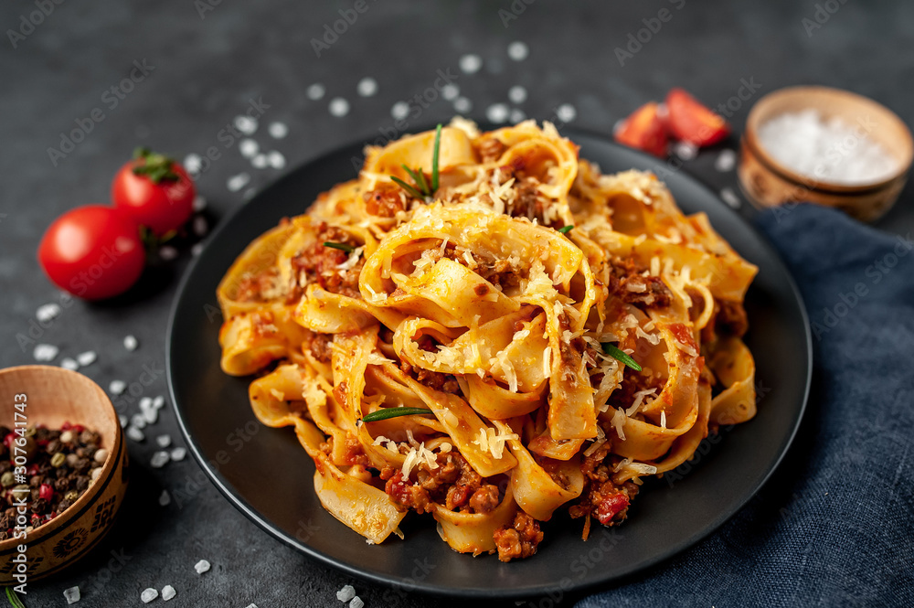

Home
Pasta Recipe

About egg pasta
Egg pasta is a type of pasta that is made with eggs, giving it a rich flavor and a slightly yellow color. It is commonly used in dishes like fettuccine Alfredo and carbonara.
Ingredients
2 cups all-purpose flour
3 large eggs
1/2 teaspoon salt
Steps to prepare the best egg pasta in the world
On a clean surface, make a mound with the flour and create a well in the center.
Crack the eggs into the well and add salt.
Using a fork, beat the eggs gently, then gradually incorporate the flour until a dough forms.
Knead the dough for about 10 minutes until smooth and elastic.
Wrap the dough in plastic wrap and let it rest for 30 minutes.
Roll out the dough and cut it into your desired pasta shape.
Enjoy your homemade egg pasta!